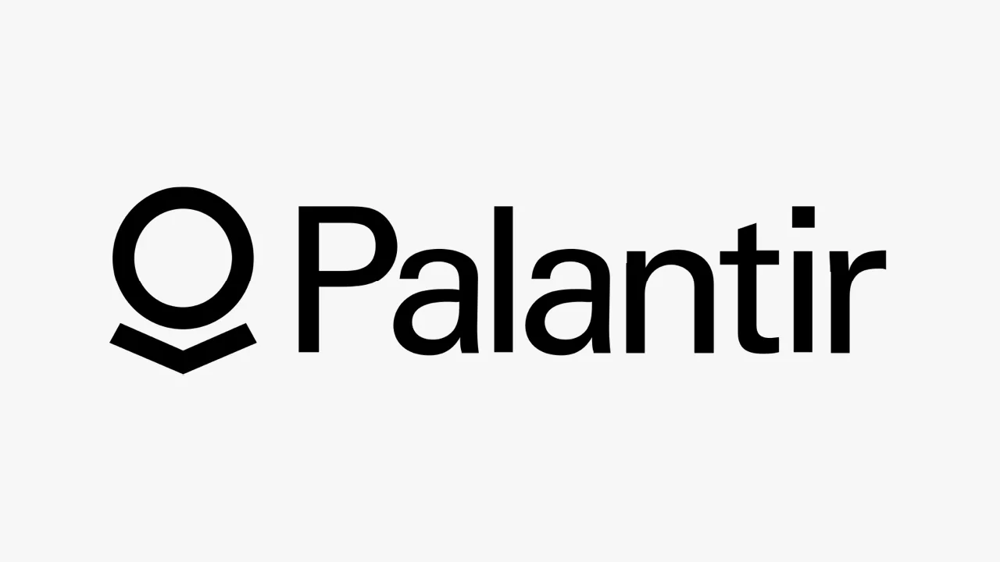

팔란티어는 인공지능 소프트웨어 종목 가운데 가장 뜨거운 이름 중 하나입니다. 투자자들이 궁금해하는 부분은 단순히 “AI를 잘하느냐”가 아니라, AIP가 고객 예산 안에서 얼마나 오래 남고, 미국 상업 고객의 성장 속도가 현재 주가의 기대를 견딜 만큼 질 좋은 매출로 바뀌고 있느냐입니다. 팔란티어는 정부 데이터 분석 회사라는 오래된 인식에서 벗어나 기업의 운영 시스템으로 들어가려 하고 있습니다.
이 글에서 보는 핵심은 세 가지입니다. 첫째, AIP가 데모와 부트캠프를 넘어 반복 매출로 이어지는지입니다. 둘째, 미국 상업 매출이 신규 고객 수보다 기존 고객 확장으로 커지는지입니다. 셋째, 높은 성장률이 이미 비싼 밸류에이션을 정당화할 만큼 오래 지속될 수 있는지입니다. 팔란티어가 인기 종목인 이유는 분명하지만, 인기만으로는 투자 판단이 끝나지 않습니다.
팔란티어의 2026년 1분기 10-Q와 2026년 1분기 비즈니스 업데이트를 보면 회사는 이미 작은 AI 테마주가 아닙니다. 2026년 1분기 매출은 16억 3,258만 달러로 전년 대비 85% 증가했고, 미국 매출은 12억 8,207만 달러로 전년 대비 104% 성장했습니다. 특히 미국 상업 매출은 5억 9,500만 달러로 전년 대비 133% 증가했습니다. 투자자가 봐야 할 질문은 이 숫자가 일회성 열기인지, 아니면 기업용 AI 운영 소프트웨어의 새 기준인지입니다.
AIP는 왜 예산 언어가 되었나

팔란티어의 AIP가 주목받는 이유는 “모델을 제공합니다”가 아니라 “회사가 이미 가진 데이터를 업무 결정에 붙입니다”에 가깝기 때문입니다. 기업 고객 입장에서는 챗봇 하나를 새로 쓰는 것보다 재고, 영업, 생산, 보안, 정부 계약, 공급망 데이터를 한 화면에서 다루는 문제가 더 큽니다. 팔란티어는 이 복잡한 데이터 연결과 권한 관리, 의사결정 기록을 오래 다뤄 온 회사입니다.
AI 소프트웨어는 화면이 멋지다고 바로 예산이 열리지 않습니다. 고객 내부의 데이터가 깨끗하지 않거나, 권한 체계가 엉켜 있거나, 결과를 누가 승인해야 하는지 불분명하면 도입이 멈춥니다. 팔란티어가 강하게 보이는 지점은 바로 이 지저분한 현장 문제를 제품 판매 과정에 끌어안는 방식입니다. AIP 부트캠프는 고객이 자기 데이터를 들고 와서 실제 업무 문제를 짧은 시간 안에 시험하게 만듭니다.
다만 부트캠프가 많다는 것과 장기 계약이 늘어난다는 것은 다른 이야기입니다. 투자자는 “몇 개 회사를 만났는가”보다 “그 만남이 어느 규모의 계약으로 남았는가”를 봐야 합니다. 팔란티어는 고객을 깊게 파고드는 영업을 잘하지만, 그만큼 초기 투입 인력과 구현 시간이 필요합니다. AIP가 진짜 강한 제품이라면 고객 수 증가뿐 아니라 고객당 평균 매출과 남은 계약가치가 같이 올라와야 합니다.
미국 상업 매출의 속도
관련 영상
팔란티어 PLTR 성장 논리를 설명하는 한국어 롱폼 영상
팔란티어를 단순한 정부 계약 회사로 보면 지금의 투자 논리를 놓치기 쉽습니다. 2026년 1분기 기준 상업 매출은 7억 7,417만 달러, 정부 매출은 8억 5,841만 달러였습니다. 아직 정부가 큰 축이지만 상업 부문의 증가율이 더 빠릅니다. 특히 미국 상업 매출 5억 9,500만 달러는 팔란티어가 민간 기업의 AI 운영 예산으로 들어가고 있다는 신호로 볼 수 있습니다.
여기서 좋은 점은 미국 상업 고객이 단순히 “AI 실험”으로만 끝나지 않을 가능성이 커졌다는 점입니다. 제조, 금융, 헬스케어, 에너지, 방산 공급망처럼 데이터가 흩어져 있고 의사결정 비용이 큰 업종에서 팔란티어의 제품은 도입 명분이 분명합니다. 한 번 연결된 데이터 흐름은 다른 소프트웨어로 쉽게 옮기기 어렵습니다. 이것이 팔란티어가 일반 SaaS보다 높은 평가를 받는 이유입니다.
그러나 이 속도가 계속 유지되려면 고객층이 더 넓어져야 합니다. 10-Q에는 2026년 1분기에 특정 고객이 총매출의 10%를 넘지 않았다고 적혀 있습니다. 이 문장은 긍정적입니다. 고객 집중도가 낮아진다는 뜻이기 때문입니다. 동시에 상위 20개 고객의 평균 매출이 커지고 있다는 점은 기존 고객 안에서 확장이 일어나고 있음을 보여줍니다. 투자자는 이 두 흐름이 함께 유지되는지 확인해야 합니다.
정부 의존도와 계약 잔고의 무게
팔란티어의 강점과 리스크는 같은 뿌리에서 나옵니다. 정부 고객은 예산 규모가 크고, 보안 요구가 높으며, 한번 들어가면 장기 관계가 생길 수 있습니다. 반대로 예산 승인, 정책 변화, 계약 시점이 회사 마음대로 움직이지 않습니다. 10-Q는 정부 고객이 경제 불확실성 속에서도 의미 있는 매출원이라고 설명하지만, 대형 정부 고객은 예산과 지출 우선순위 변화의 영향을 받는다고 함께 경고합니다.
투자자는 계약 잔고를 볼 때도 조심해야 합니다. 팔란티어는 2026년 1분기 말 잔여 수행의무가 45억 달러였고, 이 중 약 39%를 향후 12개월 안에 매출로 인식할 것으로 예상한다고 밝혔습니다. 이 숫자는 앞으로 인식될 매출의 가시성을 보여줍니다. 하지만 고객이 편의상 계약을 종료할 수 있는 조항이 있는 경우도 있기 때문에, 모든 계약 관련 숫자를 현금처럼 보면 안 됩니다.
비즈니스 업데이트에 따르면 미국 상업 남은 계약가치는 49억 2,000만 달러로 전년 대비 112% 증가했습니다. 이 수치는 AIP와 상업 확장 논리를 뒷받침하는 강한 근거입니다. 다만 투자자가 더 확인해야 할 부분은 이 계약가치가 실제 매출과 현금흐름으로 바뀌는 속도입니다. 발표 숫자가 커져도 매출 인식이 늦어지거나 구현 비용이 커지면 주가 기대와 실적 사이에 틈이 생깁니다.
밸류에이션은 어떤 숫자로 견뎌야 하나
팔란티어 주주들이 가장 궁금해할 지점은 결국 “좋은 회사인 것은 알겠는데, 이 가격을 견딜 수 있느냐”입니다. 고성장 소프트웨어 주식은 매출 성장률이 꺾이는 순간 평가가 빠르게 바뀝니다. 팔란티어는 성장률, 영업이익률, 잉여현금흐름이 동시에 강한 편이지만, 시장이 이미 높은 기대를 주가에 반영했다면 작은 실망도 크게 받아들일 수 있습니다.
2026년 1분기 조정 잉여현금흐름은 9억 2,500만 달러, 조정 영업이익률은 60%로 제시됐습니다. 보통 이런 숫자는 소프트웨어 회사의 프리미엄을 설명하는 데 유리합니다. 중요한 것은 이 마진이 AIP 확장 국면에서도 유지되는지입니다. 영업 인력과 구현 인력이 늘고, 대형 고객 지원 비용이 커지고, 모델 사용량 비용이 증가하면 현재의 높은 수익성이 흔들릴 수 있습니다.
그래서 팔란티어를 볼 때는 매출 성장률 하나로 판단하지 않는 편이 좋습니다. 미국 상업 매출 성장률, 상업 남은 계약가치, 고객 수 증가, 상위 고객 의존도, 잉여현금흐름률을 같이 봐야 합니다. 이 다섯 가지가 함께 좋으면 비싼 주가에도 논리가 생깁니다. 반대로 한두 개가 먼저 흔들리면 시장은 “AI 플랫폼”이라는 이름보다 숫자의 둔화를 더 크게 볼 가능성이 큽니다.
팔란티어의 상승 시나리오는 명확합니다. AIP가 미국 기업의 운영 시스템으로 자리 잡고, 기존 고객 안에서 계약 규모가 커지며, 정부와 상업 매출이 균형 있게 성장하는 모습입니다. 하락 시나리오도 분명합니다. AIP 도입 속도는 빠른데 실제 예산 전환이 늦거나, 정부 계약 시점이 밀리거나, 밸류에이션이 이미 너무 많은 미래 성장을 요구하는 경우입니다.
따라서 팔란티어는 “AI 대표주라서 산다”보다 “미국 상업 매출의 질이 계속 좋아지는지 확인한다”에 가까운 종목입니다. 다음 실적에서 가장 먼저 볼 숫자는 AIP 관련 표현의 강도가 아니라 미국 상업 매출, 고객당 매출, 잔여 수행의무, 조정 잉여현금흐름입니다. 이 숫자가 함께 올라가면 팔란티어의 이야기는 더 단단해집니다. 숫자가 엇갈리면 인기 있는 AI 서사도 주가를 오래 지탱하기 어렵습니다.
이 글은 특정 종목의 매수나 매도 추천이 아닙니다. 투자 판단 전에는 팔란티어의 최신 공시, 실적 발표, 고객 계약 구조, 밸류에이션 지표를 함께 확인해 주세요.